.png)
个人事迹
我的大学经历很短，短到一页纸便能放下所有常规的履历与成果；
它又很长，长到足够让我用整整四年，去读懂两个字：勇敢。
01 逆风启航：从末位到领航的蜕变
作为三位一体普通类考生，2022 年以专业末位高考成绩考入杭电的彭永乐，面对学业压力展现出惊人的韧劲。他从一开始就知道，杭电的保研名额少，数字媒体技术更甚。自 22 年入学起，这份「执念」一直在延续。深知本校本专业百人仅 1 个名额的残酷，他把无数个期末备考的夜晚留给了 6 教的灯光。从大一死磕的薄弱数学，到图形学、数据结构、操作系统等硬核专业课，每学期都在「熬一熬就过去」的自我鼓励中，在否定与肯定的交替里，一步步向前。
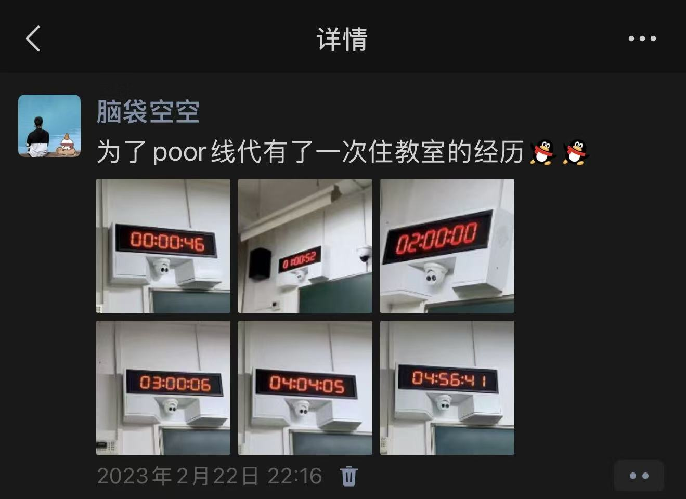
他保持平均学分绩点专业第一，斩获 30 余门课程满绩，也取得计算机二级考试 99 分、英语六级 589 分的优异成绩，曾被评为教育部-华为「智能基座」未来之星。
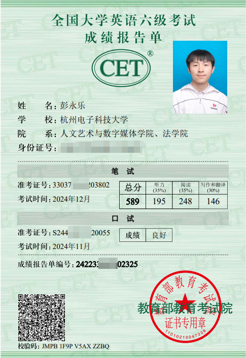
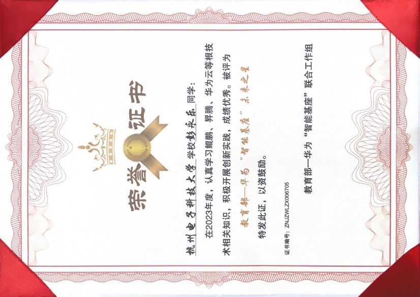
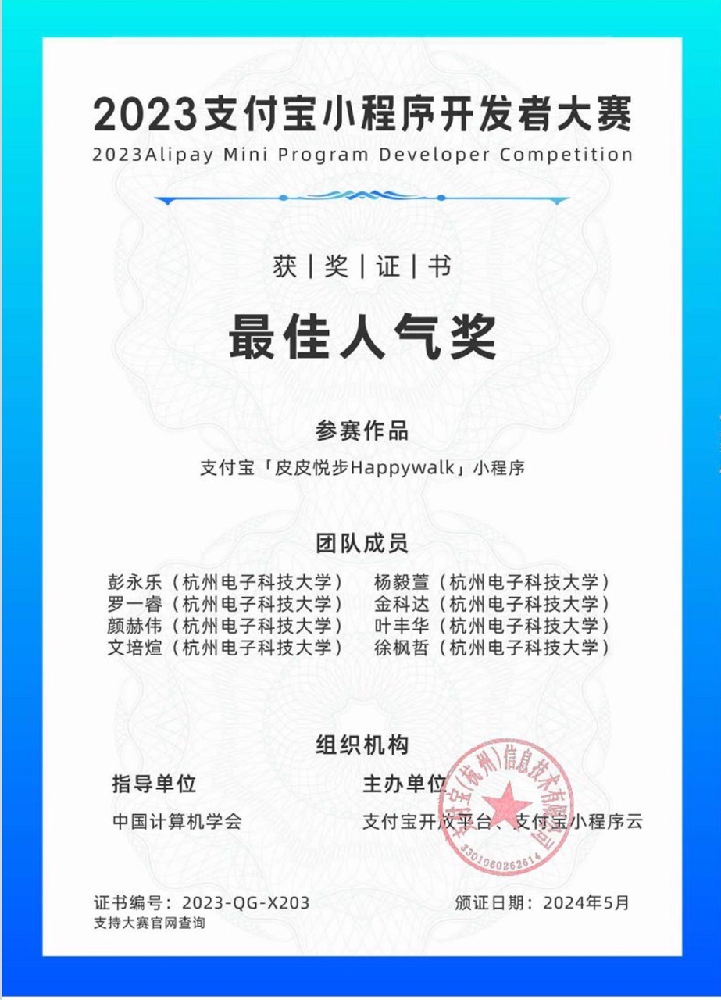
02 深耕科研：在数字沃土播撒文化种子
大一起便加入 HDVIS 大数据可视化与人机协同智能实验室 的彭永乐，将古画中的艺术密码转化为数字基因。为攻克古画知识图谱构建难题，团队需要有大量的古画标注数据集，但彼时项目因数据匮乏濒临停滞。加入考古艺术图像可视化小组的彭永乐主动对接《中华珍宝馆》平台创始人李双涛先生，获取关键古画数据资源（CAOD 数据库）授权，获得 10975 幅高清数字古画资源和对应的标签库，从而帮助团队开展后续的工作。在导师周志光教授和学长学姐的指导下，他围绕古画知识图谱构建技术申请的国家发明专利已进入实质审查阶段；以第一作者身份完成的古画检索相关论文被 ChinaCI 2025 收录，并受邀在大会现场作成果展示。这个执着于「让文物活起来」的青年，正用数字技术架起古今对话的桥梁。
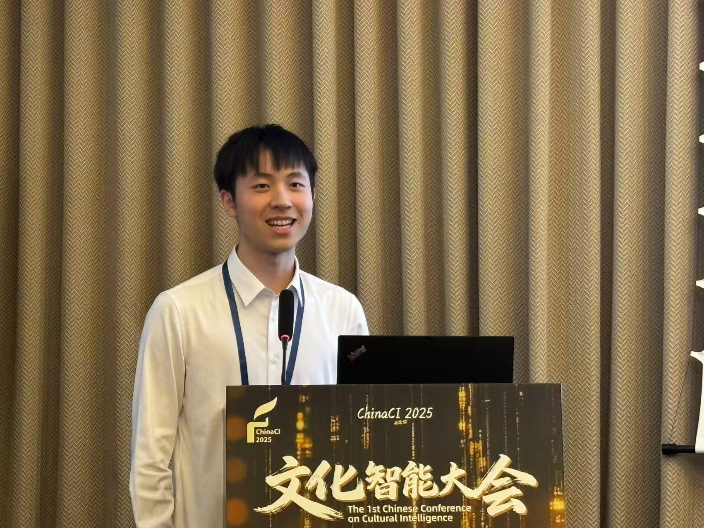
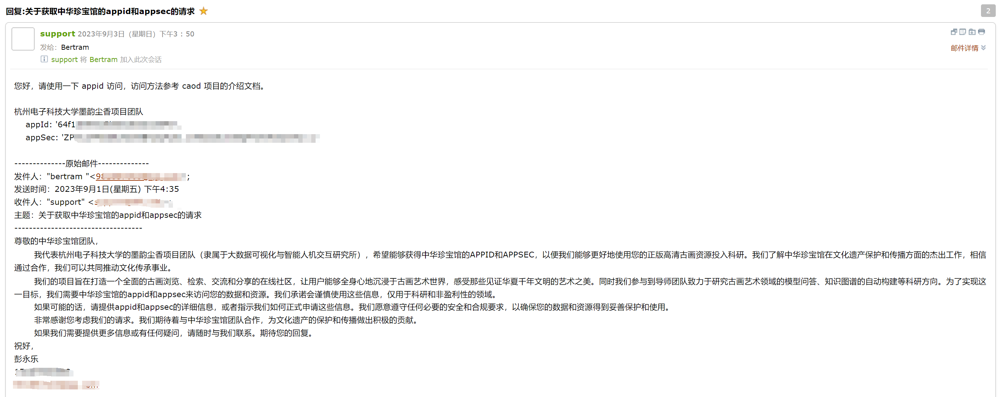
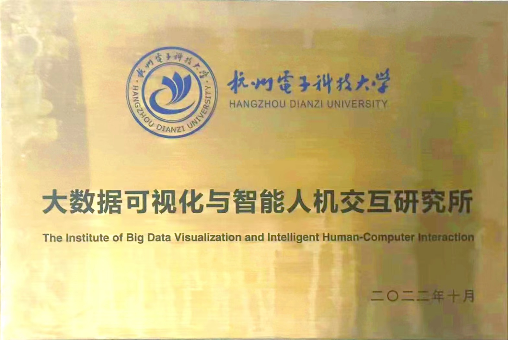
03 知行合一：搭建知识转化的彩虹桥
彭永乐始终践行「笃学力行，守正求新」的杭电校训。他依托科研项目成果，成功获得一项国家级大创立项和省级新苗立项《墨韵探源-古画基因库构建及应用》。他依托课题组的平台，以章节负责人的身份参与浙江大学《基于人工智能的国画传承与创新》通识课程建设工作。他独立完成第三章《国画数据：类型、特征与解析》课程设计，与浙大陈为教授团队、艺术与考古图像数据实验室学者展开 8 次研讨，撰写课程讲稿与教学案例注释（累计 1.2 万字），整合故宫博物院、中华珍宝馆等机构的公开数据资源，设计并制作 79 页交互式 PPT 课件，包含 18 个国画案例分析（如《千里江山图》色彩解构、题跋文本语义分析）。该课程已于 2024-2025-1 学期上线浙江大学教务系统选课平台。
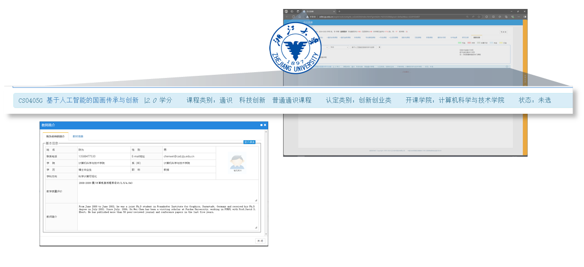
04 服务先锋：党建引领下的青春担当
作为学生党支部副书记和党员先锋队队长，他协助学院党委全年组织理论学习、廉政教育等活动 44 场，覆盖师生 3000 余人次。聚焦思想引领，协助策划习近平总书记重要讲话精神学习 14 次；连续三年助力学院「新生入党第一课」，创新「专题党课+红色朗诵」模式，覆盖学院 900 余名新生。深化党风廉政建设，协助开展党风廉政活动 8 次；协助组织党建与业务融合研讨 9 次，联动 5 家单位协助开展党建联建等活动 6 次。协助打造「毕业生党员最后一课」等学院心引力党建特色品牌活动，以「服务者」身份践行党员初心，获同学「有温度、有深度」的反馈。此外，他也积极参与志愿服务，累计时长超过 127 小时。大二期间，他作为亚运志愿服务助理，为亚运会顺利举行贡献力量，并投稿参加「我和亚运的故事」征文比赛，作品《手中的牡丹花》获校优秀征文奖。
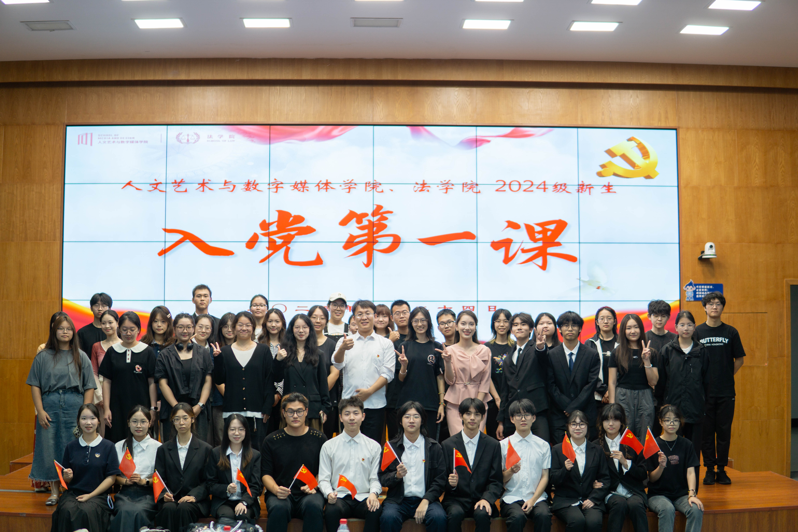
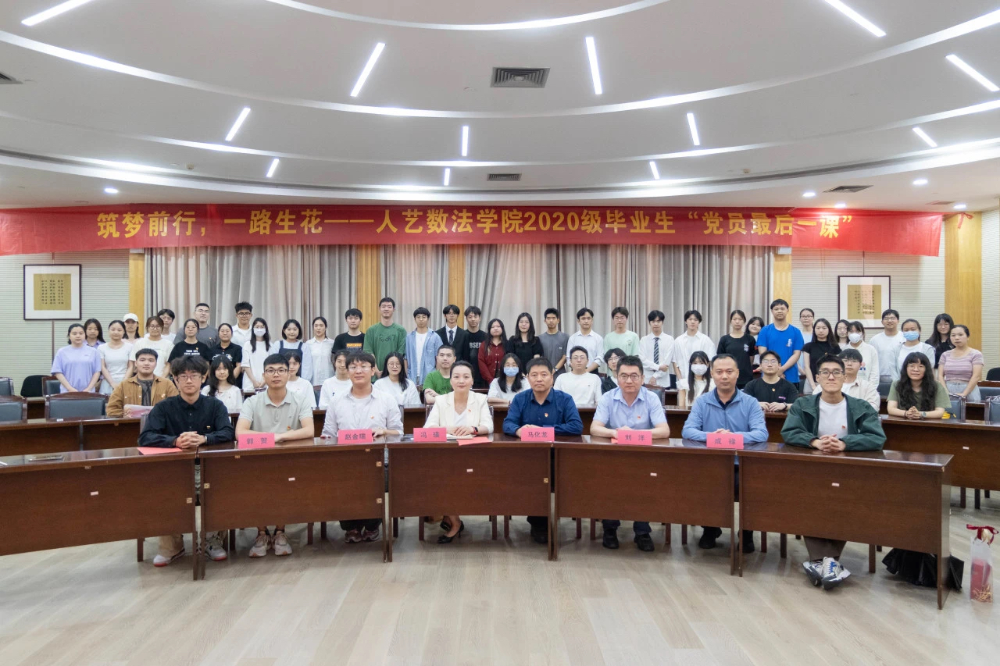
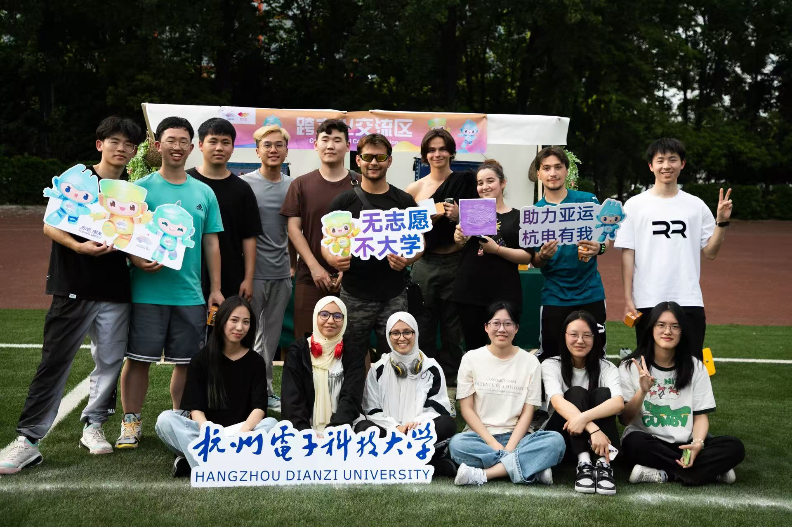
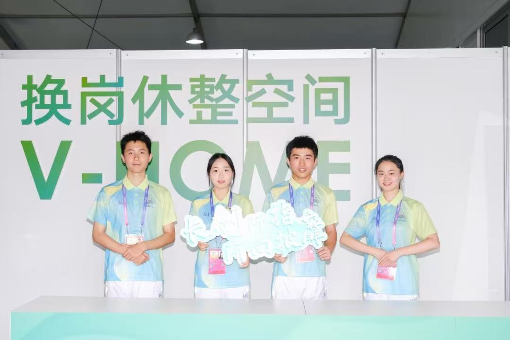
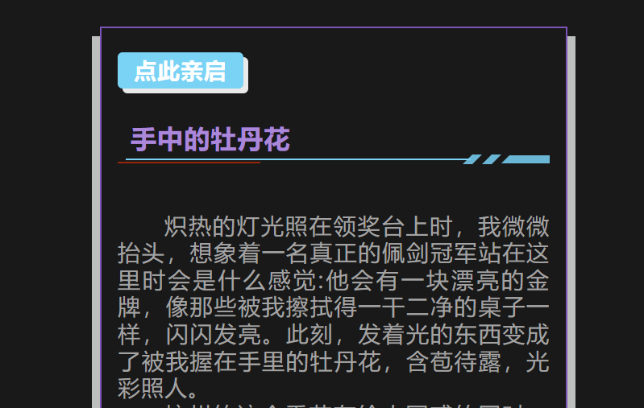
05 经验共享：从班助答疑到互联网赋能
大二作为知心学长，大三担任班助期间，他曾收到过不计其数的咨询（课程备考/竞赛组队/论文写作等），发现 60% 问题存在共性。去年在帮助数媒专业学妹优化大创申报书时，意识到经验复用价值——这份最终获省级立项的申报书框架，后来成为账号「作业比赛文档超越版本」系列的首篇爆文。他在小红书（@朕的碰碰车呢；小红书号 738251406）持续分享大学成长经验，目前发布笔记涵盖：
- 竞赛实战：如《背景图片设置》（单篇阅读 7.8w，收藏 3k+）
- 学术写作：论文排版技巧、AI 公式编辑技巧
- 学生工作：班长秘籍系列、好用工具分享
欢迎关注交流，所有分享均基于个人真实经验提炼。他通过业余时间在小红书上分享竞赛心得与经验，累计创收 5k+。
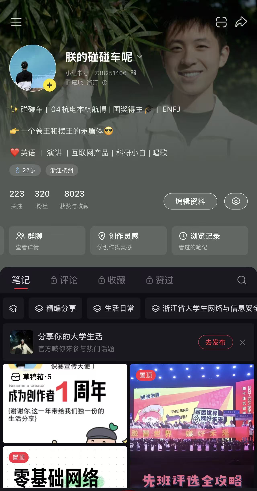
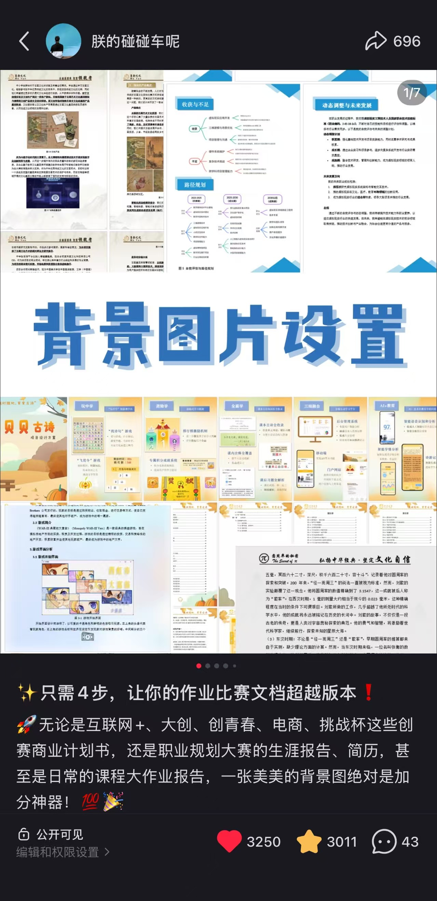
06 终章寄语
生活本是藏满惊喜的莫比乌斯环，
那些被咖啡渍晕染的演算纸终将化作翅膀，
而我们都是自己故事里的哥伦布，
既要扬帆破译知识的潮汐，
也要在月光如水的夜晚，
学会撷取属于平凡日子的隽永诗意。
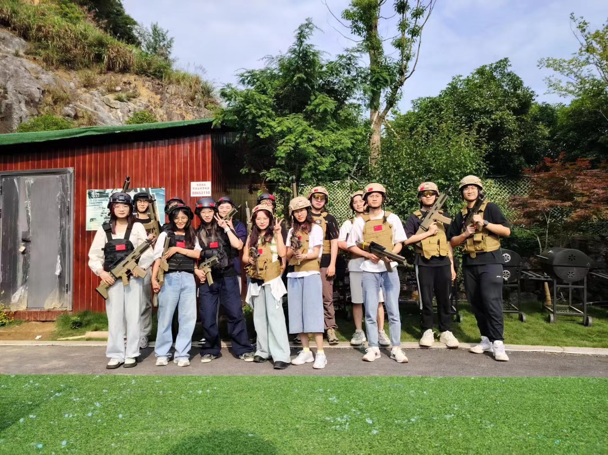
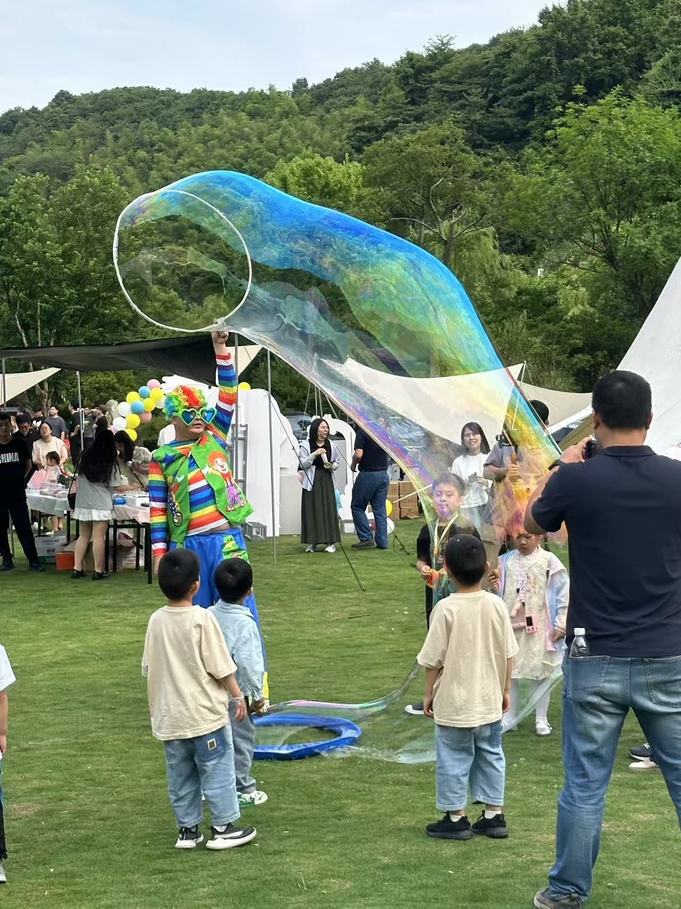
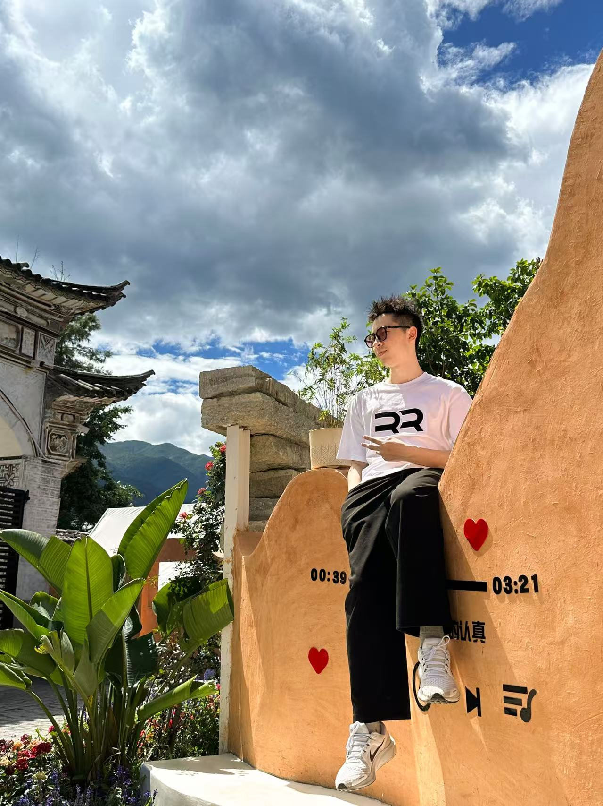
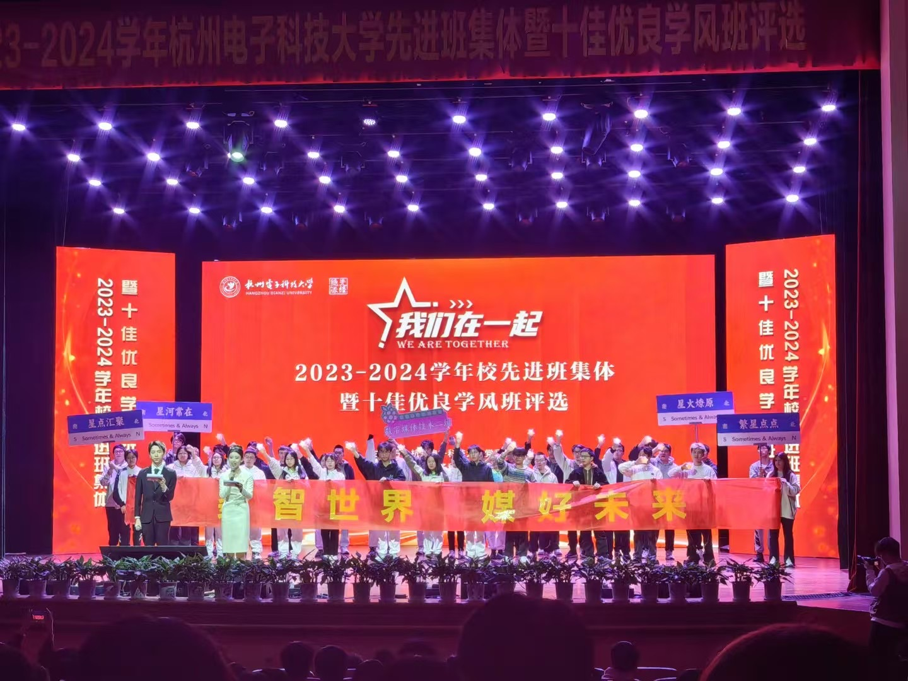
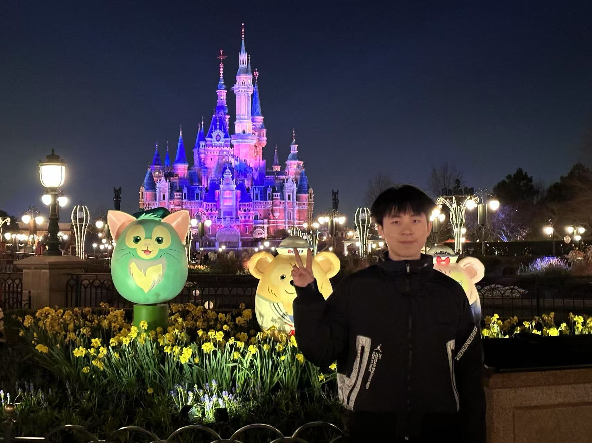